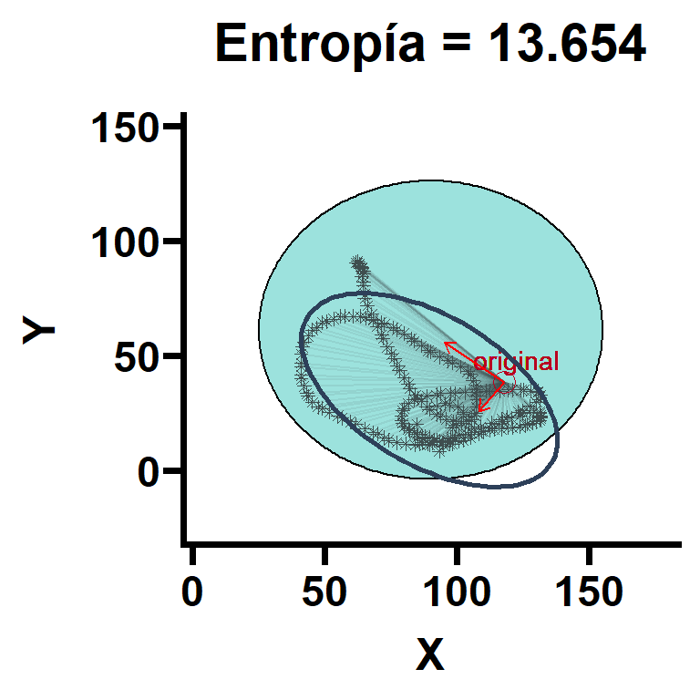
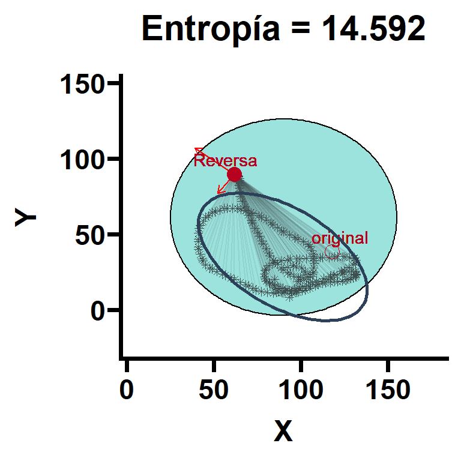

Cálculo de Entropia en el Laberinto Acuático de Morris
Cálculo
Coordenadas de annulus original: (117.8, 38.4). Coordenadas de annulus Reversa: (61.8, 89.6). NOTA: Las coordenadas del animal y del aparato están en centímetros. Se pueden usar mm, pixeles o lo que se requiera, aunque puedan cambiar las unidades de entropía, pero seguirán siendo equivalentes y proporcionales siempre y cuando se use la misma unidad. Se recomienda hace un poco más grande el radio del aparato para graficar (esto no afecta el cálculo de H). Ejemplo de archivos para esta app en este enlace y en este enlace.
#| standalone: true
#| viewerHeight: 600
library(shiny)
library(janitor) # For clean_names
library(dplyr) # For data manipulation
library(car) # For the ellipse function
# Define UI for app to upload and analyze CSV file
ui <- fluidPage(
titlePanel("Cálculo de entropía"),
sidebarLayout(
sidebarPanel(
# Input: Select a CSV file
fileInput("file1", "Subir coordenadas", accept = ".csv"),
# Numeric input for defining platform (plat_x, plat_y)
numericInput("plat_x", "Coordenadas de plataforma en X", value = 117.8,), # Default value
numericInput("plat_y", "Coordenadas de plataforma en Y", value = 38.4), # Default value
# Numeric input for defining the center (wm_centr_x, wm_centr_y)
numericInput("wm_centr_x", "Centro en X del aparato", value = 90.13), # Default value
numericInput("wm_centr_y", "Centro en Y del aparato", value = 61.3), # Default value
# Numeric input for defining the radius of the Annulus
numericInput("radio_wm", "Radio del aparato", value = 65), # Default value
tags$hr(),
# Button to calculate entropy
actionButton("calc_entropy", "Calcular H")
),
mainPanel(
tableOutput("entropy_table"), # Display entropy
plotOutput("plot") # Display plot
)
)
)
# Define server logic
server <- function(input, output, session) {
observeEvent(input$calc_entropy, {
req(input$file1) # Ensure that a file is uploaded before proceeding
# Read the CSV file
data <- read.csv(input$file1$datapath)
# Clean column names with janitor to ensure consistency
data <- janitor::clean_names(data) %>%
dplyr::slice(2:n()) # Remove the first row if it contains 0,0
# Rename the first three columns to 'time', 'X', 'Y'
names(data)[1:3] <- c("time", "X", "Y")
# Use input values for platform and center coordinates
plat_x <- input$plat_x
plat_y <- input$plat_y
wm_centr_x <- input$wm_centr_x
wm_centr_y <- input$wm_centr_y
radio_wm <- input$radio_wm
Xraw <- as.numeric(data$X)
Yraw <- as.numeric(data$Y)
# Calculate differences between platform and raw data
d_x <- Xraw - plat_x
d_y <- Yraw - plat_y
dist2 <- d_x^2 + d_y^2
# Entropy calculation
w <- 1
sw <- sum(w)
xm <- mean(w * d_x) / sw
ym <- mean(w * d_y) / sw
xxm <- mean(w * d_x * d_x) / sw
yym <- mean(w * d_y * d_y) / sw
xym <- mean(w * d_x * d_y) / sw
Sig <- matrix(c(xxm - xm^2, xym - xm * ym,
xym - xm * ym, yym - ym^2), nrow=2)
eig_val <- eigen(Sig)$values
var_xy2 <- eig_val[1] * eig_val[2]
mdist2 <- mean(w * dist2) / sw
entropy <- log(mdist2) + 0.5 * log(var_xy2)
# Create a data frame for output
entropy_data <- data.frame(Entropia = entropy)
# Output the data frame
output$entropy_table <- renderTable({
entropy_data
})
# Output the plot
output$plot <- renderPlot({
# Define limits with a buffer around the annulus
x_lim_buffer <- radio_wm + 20
y_lim_buffer <- radio_wm + 20
# Set up the plot window
plot(Xraw, Yraw, pch = 4, col = "#3F4E4F", xlim = c(wm_centr_x - x_lim_buffer, wm_centr_x + x_lim_buffer), ylim = c(wm_centr_y - y_lim_buffer, wm_centr_y + y_lim_buffer), xlab = "X", ylab = "Y", main = "Coordenadas del ratón alrededor del Annulus blanco")
# Draw the annulus (circle) using base R
symbols(wm_centr_x, wm_centr_y, circles = radio_wm, add = TRUE, inches = FALSE, fg = "black", bg = "#98DED9")
# Plot the platform as a red point
points(plat_x, plat_y, col = "red", pch = 19, cex = 1.5)
text(plat_x + 15, plat_y - 20, labels = "Plataforma", col = "red")
# Draw lines from each point to the platform
segments(Xraw, Yraw, plat_x, plat_y, col = "#3F4E4F", lty = 3)
})
})
}
# Create Shiny app
shinyApp(ui, server)
Ejemplo de la función ejecutada en R

Debido a las limitaciones de shinylive, se recomienda bajar el código fuente original (disponible en este repositorio) y ejecutarlo desde RStudio.
El script está diseñado para ser ejecutado en solo tres pasos:
- Correr la función.
- Especificar el directorio del archivo a analizar. El archivo tiene que tener las siguientes características: formato
CVS; 3 columnas (tiempo [en segundos], X [en cm], Y [en cm]). NOTA, se pude hacer con las coordenadas en mm, pulgadas…etc, pero se tiene que ajustar la función en caso de no proveer en centímetros Ver aquí ejemplo de archivo. - Lllamar a la función especificando, en orden, las coordenadas de la plataforma en x, y, el centro del water maze en x, y, radio del water maze en cm. Ejemplo:
calculate_entropy_and_plot(file_path, 117.8, 38.4, 90.13, 61.3, 65, reversa = FALSE) - En caso de ser una prueba reversa, se debe añadir las coordenadas reversa:
calculate_entropy_and_plot(file_path, 117.8, 38.4, 90.13, 61.3, 65, reversa = TRUE, plat_x_rev = 61.8, plat_y_rev = 89.6)para obtener el siguiente gráfico:

Explicación
El cálculo de entropía está basado en la propuesta de Maei et al., 2009.
Primero se obtienen de las distancias que se compone de las coordenadas del animal, las diferencias del animal al punto de referencia (annulus blanco), el cuadrado de la distancia Euclidiana, la distancia Euclidiana y el promedia de la distancia (\(σ_d\)). Con estos parámetros, se calcula la distancia del animal a la plataforma en cada tiempo utilizando la distancia Euclidiana tomando en cuenta las coordenadas del animal y de la plataforma planco.
\[ d = \sqrt{(x_a - x_b) + (y_a - y_b)^2} \]
Las medias ponderadas y la matriz de varianza-covarianza se obtuvo con el siguiente código, donde la matriz de covarianza se construye con las medias ponderadas y la matriz de covarianza de valores Eigen se calcula para obtener la varianza \(σ_a^2\) y \(𝜎_b^2\). Con estos parámetros vamos a calcular la varianza de los vectores de las distancias del animal respecto a la plataforma.
La matriz de covarianza se utiliza para capturar la vraianza y covarianza de los datos en más de una dimensión. Para el caso de dos dimensiones (coordenadas X y Y), la matriz de covarianza se representa como:
\[ Σ=\begin{pmatrix} Var(x) & Cov(x,y)\\ Cov(x,y) & Var(y) \end{pmatrix} \]
donde Var(x) representa la varianza de las coordenadas X, Var(y) representa la varianza de las coordenadas Y, y Cov(x,y) representa la covarianza entre las coordenadas de X y Y. Esta matriz de covarianza resume cómo las coordenadas varían entre ellas. Si las coordenadas X y Y están altamente correlacionadas, la covarianza será alta, indicando una relación linear alta.
Los ejes principales o valores Eigen son las direcciones en las que los datos varían más. Estos ejes se encuentran realizando una descomposición en valores propios de la matriz de covarianza. Los valores propios y los vectores propios obtenidos de esta descomposición tienen las siguientes intepretaciones:
Valores Propios: Representan la magnitud de la varianza a lo largo de los ejes principales.
Vectores Propios: Indican la dirección de estos ejes principales.
Estos ejes pueden considerarse como los ejes mayor y menor de una elipse de error que mejor se ajusta a los datos. Ahora, se tiene que sumar los Logaritmos de las varianzas utilizando en el cálculo de la entropía para cuantificar la dispersión o el desorden de los datos en el plano, reflejando el producto de las varianzas a lo largo de los ejes principales
Para calcular la media de la distancia al cuadrado y calcular la entropía, se calcula la media de la distancia al cuadrado (\(σ_2^d\)). El cálculo final de entropía se obtiene sumando los logaritmos de las medias cuadradas de la distancia y el producto de los valores Eigen. En resumen, calculamos \(H_{error}\) basados en la fórmula \(H_{error} = log(varianza_{distancia})\), calculamos la varianza de la trayectoria, calculamos la entropía de la trayectoria, realizamos la operación \(H_{trayectoria} = log(var_{trayectoria})\) y finalmente calculamos la entropía total como \(H_{total} = H_{error} + H_{trayectoria}\)